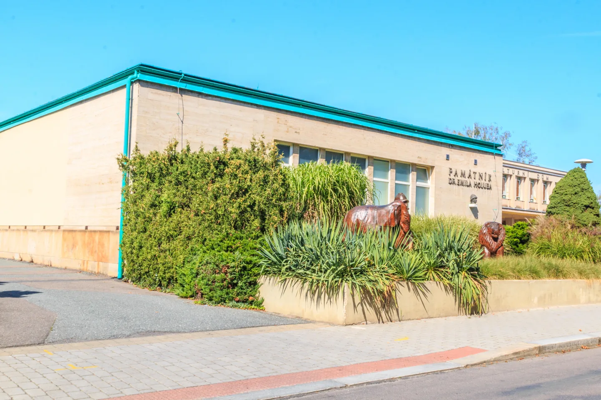
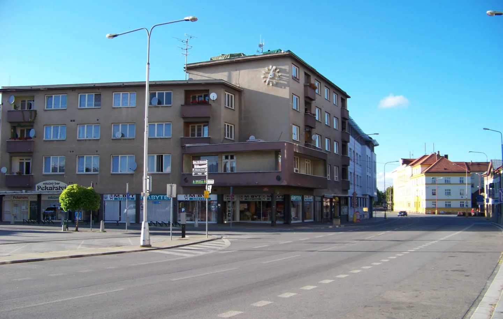
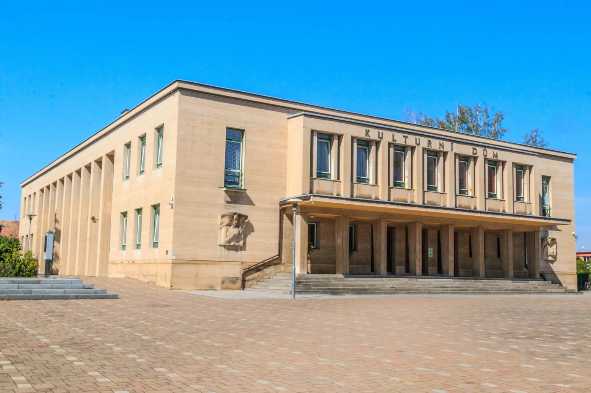
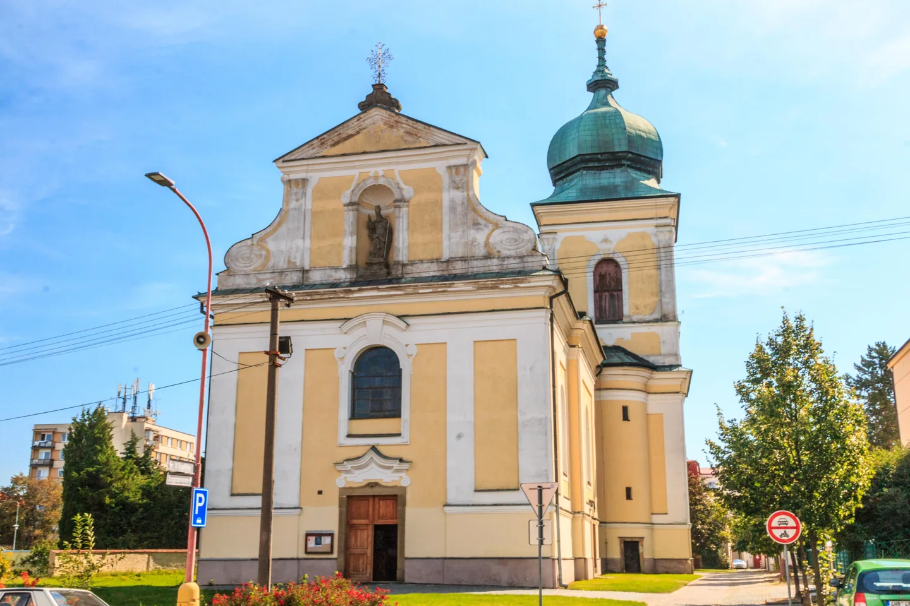

Zajímavosti
Muzeum, kostel a náměstí
Muzeum, kostel a centrum. Vyberte si, čím začnete svou návštěvu.
Prohlédnout zajímavosti Petr1888, Wikimedia Commons | CC BY-SA 4.0. Zmenšeno a převedeno do WebP.Průvodce městem a okolím
Pardubický kraj | město a okolí
Co navštívit v Holicích a kam vyrazit za město.
Holice leží mezi Pardubicemi, Hradcem Králové a Vysokým Mýtem. Najdete tu muzeum cestovatele Emila Holuba, kostel sv. Martina i dvě naučné stezky. Na těchto stránkách si můžete vybrat, co při návštěvě navštívit.
Co vidět v Holicích
Tři cesty jak město poznat

Zajímavosti
Muzeum, kostel a centrum. Vyberte si, čím začnete svou návštěvu.
Prohlédnout zajímavosti Petr1888, Wikimedia Commons | CC BY-SA 4.0. Zmenšeno a převedeno do WebP.
Osobnosti
Dva holičtí rodáci: jeden se vydal do Afriky, druhý se věnoval výtvarnému umění.
Poznat holické osobnosti Petr1888, Wikimedia Commons | CC BY-SA 4.0. Zmenšeno a převedeno do WebP.
Výlety
Městská stezka Od Holuba k Malichovi, nebo cesta lesem po stezce Viselce?
Vybrat si výlet Petr1888, Wikimedia Commons | CC BY-SA 4.0. Zmenšeno a převedeno do WebP.Jak se do Holic dostat, kde zaparkovat a kam zajít pro mapu? Kontakty a odkazy na dopravu najdete v praktických informacích.
Doprava a praktické informaceO Holicích
Holice mají za sebou historii obuvnické výroby i události května 1945. Při procházce můžete kromě památek navštívit Městský a Sokolský park.
Přečíst si o Holicích